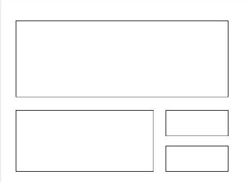
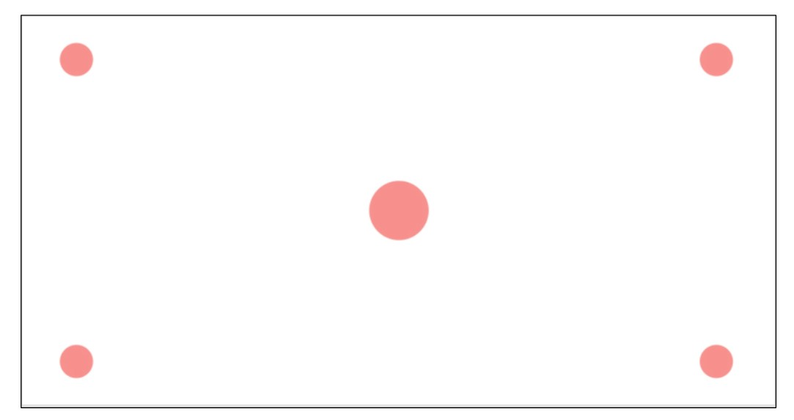
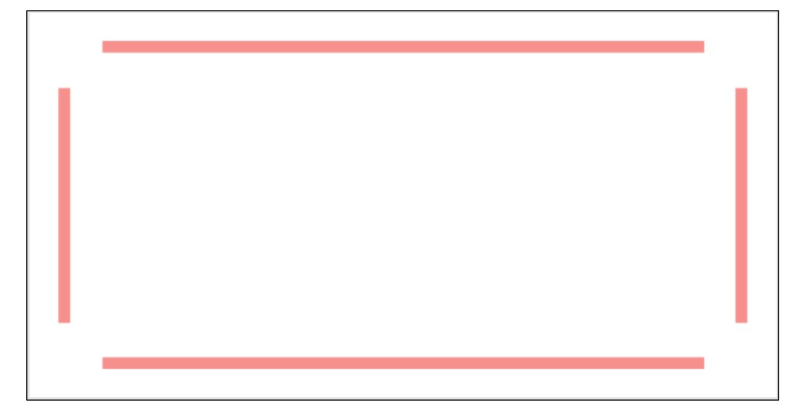
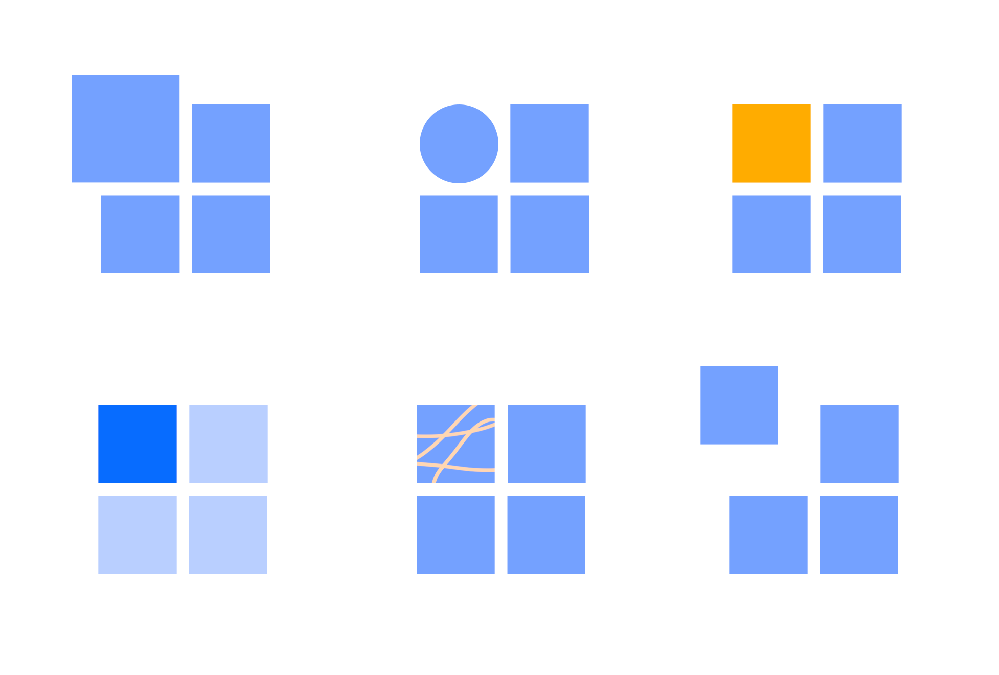
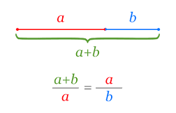

Композиция
- ПРОСТРАНСТВО и ОТСТУПЫ - это тоже часть композиции. Нужно оставлять пространство ("воздух") для контента слева-справа, сверху-снизу, чтобы не было заграмажденности
- при выборе композиции всегда отталкивайтесь от типа и количества контента (текст на фото нужно размещать так, чтобы его было видно; большие блоки текста нужно разбивать на абзацы и располагать с левой стороны макета и т.д.).
- у всех элементов сайта должно быть свое место, которое знакомо пользователю по опыту (например, меню находится вверху сайта, кнопка размещается только после какого-то текста, который подготавливает пользователя к клику).
- не изобретайте велосипед, всегда смотрите на готовые композиционные решения уже созданных сайтов и перенимайте их опыт и опыт пользователей.
- Элементы в идеале не должны быть сильно большими, лучше отталкиваться от меньших размеров
Задачи композиции
- Поймать ВНИМАНИЕ (Визуальная доминанта). Цвет, размер, контраст, пространство
- Задать НАПРАВЛЕНИЕ (Иерархия заголовков, объектов, направление чтения )
- УПОРЯДОЧИТЬ (Выравнивание, сетка)
Виды композиций:
- Симметрия - асимметрия
- Статика - динамика
ДОМИНАНТЫ
Визуальная доминанта - точка в композиции, которая однозначно цепляет ВНИМАНИЕ. Должна быть однозначной. Акцент. Заголовок, рисунок, цвет, пространство, контраст.
Хороший дизайн выделяет ГЛАВНОЕ и ПОДЧИНЁННОЕ, создаёт ИЕРАРХИЮ объектов, помогает пользователю найти свой путь
- Размером. Чем больше - тем заметнее. Контраст размеров
- Цветом. Выделение контрастным цветом
- Простраство. Усиливает фокус внимания. Отступы. Якорные области
- Иерархии заголовков. Самое важное большое, остальное - меньше
- Иерархии объектов. Важные объекты должны выделяться размером
- Фоном. Можо объединять или разделять отдельные смысловые элементы, выделять важные
- Сетка, модульность. Создаёт порядок, ритм
Якори (Акцентные области)
- Логотип чаще всего располагают в верхний левый угол
- Иллюстрации
- Крупные заголовки
- Кнопки, Иконки
- Текст
Контраст
Выделение отдельного элемента из группы.
- Размер
- Форма
- Цвет
- Насыщенность
- Текстура / анимация
- Удаленность
Теория близости
Объекты, расположенные близко друг к другу, рассматриваются ближе и по логике, и по смыслу.
Геометрия должна направлять пользователя, должно быть ощущение СКРОЛЛИНГА сайта.
ГЕОМЕТРИЯ
Точка •
В типографике можно рассматривать любой элемент небольших размеров (кнопка, иконка, логотип, отдельные буквы и цифры). Имеют только один фокус внимания. Круг - частный случай точки, самая "эгоистическая фигура", максимально притягивает внимание, максимальный ацкцент. Точечные объекты чаще всего располагают в ЯКОРЯХ.
Линия —
Строка. В типографике это строка, самый удобный, читабельный, скромный, спокойный и лаконичный элемент в вёрстке. Это заголовки, хэдэр, футер, невысокие блоки. Как якорный объект строка лучше всего себя чувствует СВЕРХУ или СНИЗУ модуля.
Прямоугольник ▆
Универсальный контейнер для всех типов объектов: точечных, строчных и прямоугольных.
Треугольник, ломаная
Резкость, динамика, модернизм, бескомпромиссность
Круги, овалы
Совершенство, лёгкость, мягкость
Золотое сечение (пропорция Φ)
Это такое деление целого на 2 части, при котором отношение БОЛЬШЕГО / МЕНЬШЕМУ = ЦЕЛОГО / БОЛЬШЕМУ ≈ 1.618
Это такое деление целого на 2 части, при котором отношение МЕНЬШЕГО / БОЛЬШЕМУ = БОЛЬШЕГО / ЦЕЛОМУ ≈ 0,618
1 = 0.618 + 0.382 ≈ 62% + 38%;
Φ = 0.618 / 0.382 = 1.618;
Φ2 - Φ = 1;
Если нужно найти БОЛЬШУЮ часть, то значение ЦЕЛОГО нужно поделить на Φ (либо умножить на 0,618).
Если нужно найти МЕНЬШУЮ часть, то значение ЦЕЛОГО нужно поделить на Φ2 (либо умножить 0,382).
Последовательность Фибоначчи
Каждый следующий член ряда равен сумме двух предыдущих. При этом отношение членов этого ряда будет стремиться к Φ.
1 + 1 + 2 + 3 + 5 + 8 + 13 + 21 + 34 + ... + n + (n+1) + ...;
(n+1):n ---> Φ